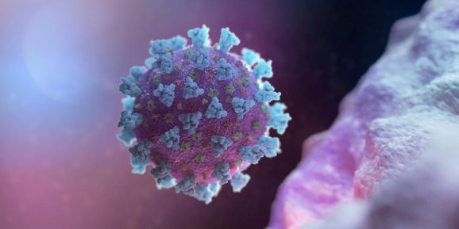
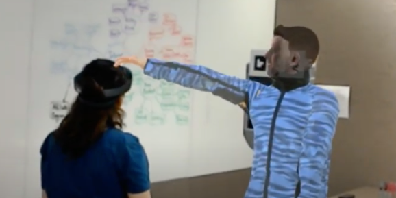
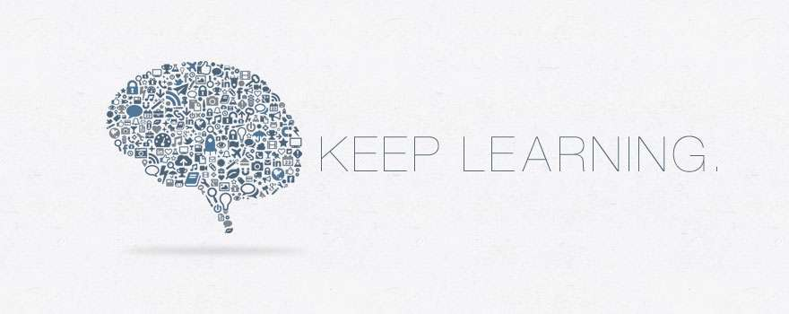

阿格利湖 (Ägerisee) 的宁静湖岸吸引着游人前来，在瑞士中部蔚蓝的天空下，在延绵起伏的翠绿山丘怀抱中度过悠闲的一天。
阿格利湖周边这片地区长久以来一直十分和平，但在 14 世纪初，这里发生了一些事情，在两个主要方面改变了历史的进程。
第一件事是，在莫尔加滕战役期间，瑞士同盟军以少胜多，在该湖岸击败了入侵的哈布斯堡军队。由此形成了一个同盟，也就是现代瑞士国家诞生的核心。
另一件事是，在该战争期间，瑞士军队发展出长枪方阵战术队形，据说这是现代步兵团的起源。

A team of researchers hailing from Harvard and Université de Montréal today launched Epitopes.
world, an AI-powered, interactive platform designed to facilitate COVID-19 vaccine development.
It’s built atop an algorithm — CAMAP — that generates predictions for potential vaccine targets,
enabling researchers to identify which parts of the virus are more likely to be exposed at the surface (epitopes) of infected cells. .

Members of Microsoft Research today introduced Virtual Robot Overlay for Online Meetings (VROOM),
a way to combine AR and VR and bring life-sized avatars into the workplace via telepresence robots.
Makers of VROOM detailed the system in a recently released paper and said it’s meant to make both the person working remotely in VR and the
person who is working in the office and wearing a HoloLens AR headset feel like they’re in the same place.

假期中！博客还没更新！
Lists
每日一句
- 一个人的性格可以从他谈吐中使用的形容词里去了解。
- 我认为梦境才最为真切，它自然纯净、无法侵腐。
- 在自然中，一切事物过犹不及。
是这样吗？
- 我没有特殊的才能，我只是有强烈的好奇心。
- 不要憎恨你的敌人，否则你将做出错误的判断。
- 勇气是一架梯子，其他美德全靠它才能爬上去。
是这样吗？
- 正规教育能维持生计，自我教育能获得财富。
- 属于自己的，不要放弃。已经失去的，留作回忆。
- 人生最大的危险在于太过于谨慎。
- 人类的勇气和坚毅必将被镌刻在星空之下。
- 我这一辈子都在推迟做那些我以为以后会有时间做的事情。
- 我们的星球是宇宙无边的黑暗中孤独的尘埃。
Icons